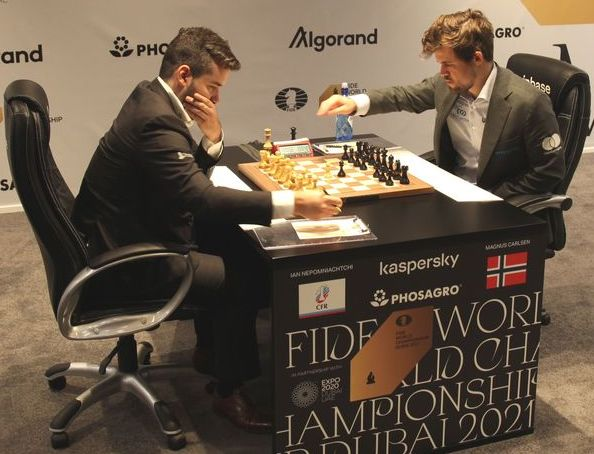

Quiz Q-Wk12 (on Week 11: repair an unverifiable requirement) · then recap: the requirement CascadePID misses
10′
00:10
Block A — the finite-horizon OCP, piece by piece · receding horizon · the QP
40′
00:50
Concept check + the wall, live
10′
01:00
Block B — implementation: model, solver, real-time contract, tuning
30′
01:30
Break
10′
01:40
Lab briefing
10′
01:50
Lab session: read mpc.py, plan around a thrust limit, tune it
60′
02:50
Debrief + baseline freeze
10′
Recap → today
Where the classical stack runs out of road
Wk 7's LQR scorecard had two highlighted rows: input limits: not represented · valid near hover only.
Wk 11 turned that from an opinion into a certificate: on mission M3, the reference CascadePIDfails REQ-M3-1 — max deviation 0.540 m against a 0.50 m bar.
Nothing is wrong with the tuning. The controller simply has no way to know a limit exists until it has crossed it.
Today's move: stop hiding constraints in clamps and folklore. Write them into the optimization itself — and re-solve that optimization every control step, from wherever you actually are. The reference LinearMPC does exactly that and certifies at 0.473 m. That before/after is your final project.
0.540 m and 0.473 m are the course-default vehicle — the shared lecture example, run with no --student argument. Your own vehicle's numbers will differ. The pattern does not: on every student vehicle the baseline fails REQ-M3-1 and the reference MPC certifies.
Learning objectives
By the end of today you can…
Write the finite-horizon OCP: prediction model, stage cost, terminal cost, constraint sets — and defend each choice.
Explain receding horizon: why solve for \(N\) moves and apply one.
Recognize the problem as a QP, and say why convexity is the whole ballgame.
Reason about horizon length, feasibility, and stability (terminal ingredients) at an engineer's level.
Choose a prediction model and a solver, and state the real-time contract (p95 solve time, warm start, miss policy) your controller runs under.
Diagnose the standard tuning pathologies and turn the right knob, in the right order.
Lab Read mpc.py end to end and make LinearMPC plan around a thrust limit instead of clipping into it.
Mental picture first
You already run a receding horizon — at the chessboard

World Championship 2021. A grandmaster calculates a deep line, plays one move, and — after the reply — calculates again from the new position. Nobody plays the whole game open-loop. Photo: V. Barskij, Wikimedia Commons, CC BY-SA 3.0.
Plan deep, commit one move, replan: that is the entire receding-horizon idea. Feedback enters through the opponent's reply — for us, through the measured state.
Depth costs time (the clock = our control period); shallow search misses tactics (our critical horizon at the wall).
Rules constrain every candidate line during search, not by vetoing after — exactly where MPC parts ways with clamped LQR.
Mental picture first
Braking before a wall: the whole method in one problem
You are moving at 1.3 m/s toward a wall 1 m away. Your brakes give at most 1 m/s². When do you start braking?
A reactive controller brakes in proportion to how close you are — and with a bounded brake, it starts too late and hits the wall.
You do not do this. You compute, roughly, that stopping takes 1.3 s and 0.85 m, and you begin braking before the error is large.
That is the entire difference. Anticipation requires prediction; prediction requires a model.
Why this problem and not a quadrotor.
Because it strips the idea to one dimension and one constraint, and you can compute the answer in your head. Every complication in the rest of the lecture — horizons, feasibility, terminal costs — is machinery for doing this, reliably, on a twelve-state aircraft, sixty times a second.
(90 s) — Before any mathematics: at what distance must you begin braking? (\( d = v^2/2a = 0.85 \) m — so you have 0.15 m of slack, and any controller that has not started by then hits the wall no matter how it is tuned.)
Concept check
Three questions before the lab
Q1 — Your MPC and your LQR produce identical trajectories on the mission. Is something broken?
Almost certainly not — it means no constraint activated.Unconstrained, linear, quadratic \( \Rightarrow \) MPC provably reduces to LQR with preview. Check the activation plot; if nothing is shaded, the mission is not exercising the method.
Q2 — A classmate proposes hard constraints on tilt, corridor and thrust, with \( N = 8 \) at 50 Hz, for a gusty mission. Name two problems.
(1) Hard state constraints plus gusts give mid-flight infeasibility. (2) \( N\Delta t = 0.16 \) s is shorter than the gust response.Soften tilt and corridor, keep thrust hard, and lengthen the horizon in seconds — coarsening \( \Delta t \) if the solve does not fit.
Q3 — Why use the LQR solution as terminal cost rather than simply a large \( Q \)?
Because \( P_f = P_{LQR} \) encodes the true cost of everything beyond the horizon.A large \( Q \) only says “be near zero at the end”, which the optimiser can satisfy by arriving fast and badly. The LQR bowl says “be somewhere from which the future is cheap” — a different and correct instruction.
discrete prediction model (Wk-4's linearization, ZOH)
hover model @ 50 Hz
\(Q,R\)
your Wk-7 preferences, unchanged
Bryson's rule still applies
\(\mathcal{U}\)
input set
\( 0\le f_i\le 4\,\text{N} \), slew limits
\(\mathcal{X}\)
state set
tilt ≤ 20°, corridor \( |y|\le 0.5 \) m
\(P_f\)
terminal cost — "the future after my horizon"
the LQR \(P\)! (that's not a coincidence — Block B)
\( \mathbf{x}_0=\hat{\mathbf{x}} \)
feedback enters here
Wk-8's estimate, every step
First principles
Three ways to use a model, and only one of them plans
Use
What it does
Method
Week
Analyse
find poles, check controllability
eigenvalues
4
Design once
solve for a fixed gain matrix
LQR
7
Predict, repeatedly
simulate the future, choose the best action, act, repeat
MPC
12
The escalation.
Each row uses the model harder and costs more computation. LQR consults the model once, offline, and then never again — the gain matrix is a frozen summary of everything the model knew.
MPC keeps the model live. It re-consults it every control period, from the state it is actually in, with the limits it actually faces. That is the whole difference, and everything else today is machinery for affording it.
So the honest one-line definition: MPC is LQR that refuses to summarise. It pays computation to keep the model's full advice available at every instant, including advice about constraints that a gain matrix cannot express.
Term by term
The five ingredients of an optimal control problem
Ingredient
Symbol
What it encodes
How you choose it
prediction model
\( A_d, B_d \)
what the aircraft will do
Week 4's linearisation, discretised
horizon
\( N \)
how far you look
long enough to see the constraint coming
stage cost
\( Q, R \)
what you want, moment to moment
Bryson's rule — unchanged from Week 7
terminal cost
\( P_f \)
'and after that?'
the LQR \( P \); it is what makes it stable
constraint sets
\( \mathcal U, \mathcal X \)
what you are not allowed to do
physics (hard) vs preference (soft)
Notice what is not new.
Four of the five ingredients you already own. \( Q \) and \( R \) are Week 7's; \( A_d, B_d \) are Week 4's; \( P_f \) is Week 7's Riccati solution.
Only the constraint sets are new — and they are the entire reason for the method's existence.
The design question this reframes.
In LQR you asked: how much do I dislike error versus effort? In MPC you also ask: what must never happen, and what would I merely prefer to avoid?
That second question has an answer in engineering terms — walls, motor limits, tilt caps — which is why practitioners find MPC natural to specify.
Detail, done properly
Hard vs soft: the most consequential design decision
Hard constraint
Soft constraint
Written as
\( g(\mathbf x, \mathbf u) \le 0 \)
\( g \le s \), \( s \ge 0 \), penalise \( \rho s \)
If violated
problem is infeasible — no solution returned
solution exists, violation is priced
Use for
what physics enforces anyway
what you would prefer
Example
\( 0 \le f_i \le f_{max} \)
tilt \( \le 20^\circ \), corridor width
Failure mode
controller outputs nothing, mid-flight
gradual, graceful degradation
Why the motors stay hard.
Because a solution that commands 5 N from a 4 N motor is not a solution — it is a fiction the mixer will silently edit (Week 3). Better that the optimiser knows the limit and plans around it.
Why tilt goes soft: a gust can put you at 22° whether you like it or not. A hard tilt constraint would make the problem infeasible precisely when you most need a command. Softening it means the controller says 'I am 2° over, and I am correcting' instead of saying nothing at all.
Get this split wrong and your MPC works beautifully in still air and dies in the first gust. It is the most common project failure, and it is a design error, not a tuning one.
Block A
Receding horizon: plan like a chess player, act like one too
Solve for N moves, keep one, slide, repeat. The dashed plan is discarded every step — on purpose.
Solving once and playing the whole tape = open loop — one gust and the plan is fiction.
Re-solving from the measured state closes the loop: MPC is feedback via optimization.
Wk-9's slogan upgraded: FF flies the plan, FB flies the surprises — replanning shrinks the surprise budget to one step.
Cost of admission: an optimization solved within one control period, forever — Block B after the break pays that bill.
Where MPC grew up · and a number you can compute
Forty years of industrial service before it flew
Distillation columns. MPC was born here in the late 1970s (Richalet's IDCOM, Shell's DMC): many coupled variables, hard limits, minutes-long dynamics — constraints as the product. Photo: C. Valenzuela, Wikimedia Commons, CC BY-SA 4.0.
Refinery MPC re-solves every few minutes; quadrotor MPC every 20–40 ms. Same mathematics — three orders of magnitude in tempo, bought by convex solvers + cheap compute. That migration (process → automotive → aerospace) is the reason this lecture exists.
Worked example (the critical horizon, before the widget).
Braking case: \( v_0 = 1.3 \) m/s, \( |u| \le 1 \) m/s², \( \Delta t = 0.1 \) s.
Stopping needs \( t_{stop} = v_0/u_{max} = 1.3 \) s over \( d = v_0^2/2u_{max} = 0.85 \) m.
The plan must contain the stop ⇒ \( N \ge t_{stop}/\Delta t = 13 \). Predict: the widget should fail near N ≈ 13. Now go find out.
Concept check · 00:50
The wall, revisited — predict first
Braking problem: v = 1.3 m/s toward a wall, \(|u| \le 1\) m/s². Clamped LQR vs MPC with horizon \(N\). What happens as \(N\) shrinks?
MPC degrades into clamped-LQR.Below the horizon that "sees" the wall (\(N\Delta t \lesssim v/u_{\max}\)), MPC can't anticipate what it can't predict. Anticipation is the product; horizon is the price.
Interactive · test your prediction
The wall, live
Derivation · click to advance interactive
How an OCP becomes a QP (condensing)
1stack the unknowns: \( U = [\mathbf u_0; \mathbf u_1; \dots; \mathbf u_{N-1}] \)One vector to optimize. For our quad @ N=25: 4×25 = 100 numbers.
2unroll dynamics: \( \mathbf x_k = A_d^k \mathbf x_0 + \sum_{j<k} A_d^{k-1-j} B_d \mathbf u_j \)Every future state is LINEAR in U — just repeated substitution of x⁺=Ax+Bu. The dynamics constraint disappears into the algebra.
3so \( X = S_x \mathbf x_0 + S_u U \) for known matrices \( S_x, S_u \)Prediction as a matrix. S_u's block-lower-triangular shape *is* causality: u_j only touches later states.
4substitute into the cost ⇒ \( J = \tfrac12 U^\top H U + g^\top U + \text{const} \)Quadratic in U, with H ≻ 0 built from Q, R, S_u. Convex bowl — one global optimum, no initialization luck.
5limits become \( G U \le h \) — a QP a laptop solves in millisecondsBox bounds on u are rows of G; state limits ride through S_u. This exact object is what mpc.py hands to its solver — open it in the lab and find H.
Detail, done properly
Notation for the week, fixed now
Symbol
Meaning
Careful
\( \hat{\mathbf x}(t) \)
the measured state at the current instant
this is where feedback enters; nowhere else
\( \mathbf x_k \)
the model's prediction, \( k \) steps into the plan
not a measurement — a hypothesis
\( \mathbf u_k \)
planned input at step \( k \)
only \( \mathbf u_0 \) is ever applied
\( N \)
horizon length in steps
the physical horizon is \( N\Delta t \), in seconds
\( U \)
the whole stacked plan
the optimisation variable
\( s \)
slack on a soft constraint
\( \ge 0 \), penalised, never free
The distinction that causes most confusion.
\( \hat{\mathbf x}(t) \) versus \( \mathbf x_k \). One is reality entering the problem; the others are the model's imagination about the future.
Students who blur them end up believing MPC 'knows' the future. It does not — it assumes a future, acts on the first step of that assumption, and then measures reality again and rebuilds the assumption from scratch.
Say it precisely in the viva.'Feedback enters only through \( \mathbf x_0 = \hat{\mathbf x}(t) \); everything else in the problem is open-loop prediction, discarded and rebuilt every period.' That sentence demonstrates you understand where the closed loop actually is.
Counting rows, because size matters.
Per step: 8 rows for motor bounds, 2 for a corridor, 1 for tilt, 8 for slew. Over \( N = 25 \) that is roughly 475 inequality rows against 100 variables.
That is a small QP. Modern solvers handle it in single-digit milliseconds. Knowing the size before you build it tells you immediately whether the design is realistic.
The cheapest constraints.Box constraints on inputs are essentially free — most solvers handle them specially. State constraints are more expensive because they couple through the prediction. If you can express a requirement as an input bound instead of a state bound, do.
Block B · 01:00
What the solver actually sees: a QP
Stack the horizon: \( U=[\mathbf{u}_0;\dots;\mathbf{u}_{N-1}] \). The dynamics make every \( \mathbf{x}_k \) linear in \(U\) ("condensing"), so:
\[ \min_U \; \tfrac12 U^\top H U + g^\top U \quad \text{s.t.} \quad G U \le h \]
\(H \succ 0\) from \(Q,R\): convex — one global optimum, no luck involved.
Linear model + box/polytope constraints + quadratic cost = the entire recipe for convexity. Break any one → NMPC territory (Block B).
Why convexity is the ballgame: solvable in milliseconds, certifiably, warm-startable (yesterday's plan seeds today's — the horizon only slid one step). Solvers you'll meet: OSQP, qpOASES (embedded QP); CasADi/IPOPT when the model goes nonlinear. In the lab you'll write your own projected-gradient loop once, so no solver is ever a black box to you again.
Detail, done properly
Choosing the horizon: three competing pressures
Pressure
Wants \( N \)
Because
see the constraint coming
long
below the critical horizon MPC degrades to clamped LQR
compute in one period
short
cost grows roughly linearly in \( N \) (condensed QP)
trust the model
short
a hover linearisation is honest for ~1 s, not 5
The practical recipe.
1. Compute the physical time the manoeuvre needs: stopping time, gust settling time, corner duration. 2. Set \( N\Delta t \) to about 1.5× that. 3. Check the solve fits the period; if not, lengthen \( \Delta t \) rather than shortening the horizon.
For our quad: stopping from 1 m/s at 2 m/s² takes 0.5 s ⇒ horizon ≈ 0.75 s ⇒ at \( \Delta t = 0.03 \) s, \( N \approx 25 \). That is where the number in the code comes from.
Note step 3: coarsening the time step preserves the horizon in seconds while cutting the problem size. Prediction accuracy far ahead matters less than horizon reach — a genuinely useful trade that beginners rarely find.
One level deeper
Feasibility: what can go wrong, and the standard defences
Infeasible at this step. The state is outside anything the constraints allow. Cure: soften state constraints with slack.
Feasible now, infeasible later. The plan is valid but drives you somewhere with no escape. Cure: terminal set — require the horizon to end somewhere provably recoverable.
Solver did not converge in time. A budget problem, not a mathematics one. Cure: apply the previous plan's \( \mathbf u_1 \).
Recursive feasibility, informally.
If a solution exists now, a solution exists at the next step too. It is not automatic — it is engineered, by the terminal cost and terminal set together.
The standard construction: end the horizon inside a region where the LQR controller is known to keep you feasible forever. Then the tail of every plan is guaranteed to be extendable.
That is the real job of \( P_f \): not to tidy up the cost, but to hand the optimiser a promise about everything beyond its own sight.
For your final project you do not need to prove recursive feasibility. You do need to say, in one sentence, what your controller does when the solver returns nothing — because on an aircraft, that moment will arrive.
Detail, done properly
MPC and the cascade: where does it plug in?
Option
MPC computes
Rate
Inner loop
Trade
Outer-loop MPC
desired acceleration / tilt
20–50 Hz
classical PD attitude
cheap, robust, standard
Full-state MPC
motor thrusts directly
100–200 Hz
none — MPC is the whole controller
expensive; elegant
Cascaded MPC
outer MPC + inner MPC
two rates
MPC
research territory
What we do, and why.Outer-loop MPC. The constraints that matter for our missions — corridors, tilt caps, velocity limits — all live at the position level. Attitude tracking is already solved and does not need an optimiser.
It also means the aircraft still flies if the solver stalls: the inner loop holds the last commanded attitude, which is a far better failure mode than 'no command at all'.
The general principle.Put the expensive method where the difficulty is, and keep the cheap reliable method underneath it. This is how MPC ships on real vehicles — automotive, aerospace, process — and it is a pattern worth carrying beyond this course.
Worked example · by hand
Specify an MPC for the corridor mission
Model: per-axis double integrator (position, velocity), input = commanded acceleration. Discretise at \( \Delta t = 0.04 \) s.
Horizon: gust settling takes ~1 s ⇒ \( N\Delta t \approx 1.5 \) s ⇒ \( N \approx 38 \). Too big? Take \( \Delta t = 0.06 \), \( N = 25 \).
Stage cost: Bryson — tolerate 0.2 m and 0.5 m/s ⇒ \( Q = \mathrm{diag}(25, 4) \); acceleration budget 2 m/s² ⇒ \( R = 0.25 \).
Terminal: \( P_f \) from the LQR solution with the same \( Q, R \).
Constraints: \( |a| \le 2.08 \) m/s² hard (it is the tilt clamp, i.e. physics); \( |y| \le 0.5 \) m soft, \( \rho = 10^3 \).
Sanity-check the horizon against the constraint.
Can this controller stop before the corridor edge? From 1 m/s at 2.08 m/s², braking distance is 0.24 m — comfortably inside 0.5 m, and the 1.5 s horizon covers the 0.5 s manoeuvre with margin.
If those two numbers had not fitted, no amount of tuning would have helped. The check took one line and it is the difference between a design and an attempt.
(3 min) — Recompute for a corridor of \( \pm 0.15 \) m at the same speed. Feasible? (Braking distance 0.24 m exceeds the half-width, so the aircraft cannot guarantee staying inside at 1 m/s. Either slow to 0.79 m/s, or accept that the soft constraint will be violated and price it. The arithmetic tells you which conversation to have.)
Detail, done properly
Reference preview: MPC's quiet superpower
Replace the regulation target \( \mathbf 0 \) with the future reference over the horizon:
The optimiser now sees the corner coming and begins turning before the error appears.
This is feed-forward (Week 9) — but derived rather than added, and automatically consistent with the constraints.
Why it beats hand-built feed-forward.
Classical feed-forward computes \( \ddot{\mathbf p}_r \) and hands it over, whether or not the aircraft can deliver it. If the reference demands 4 m/s² and you have 2, the feed-forward term simply saturates and the tracking degrades unpredictably.
MPC with preview sees the same demand, knows the limit, and starts early — trading a small early error for a much smaller peak error. That behaviour is not programmed; it falls out of the optimisation.
This is the cleanest demonstration of what optimisation-based control buys: the controller does something sensible that nobody explicitly told it to do, because the constraints and the objective together imply it.
Block B
Two formulation upgrades you'll actually use
Track a trajectory, not the origin: replace \( \mathbf{x}^{\text{ref}}_k \) with Wk-9's \( \mathbf{p}_r(t+k\Delta t) \) — MPC previews the future reference over the horizon. Feedforward isn't bolted on; it's what the optimizer does natively when handed the future.
Penalize \( \Delta\mathbf{u} \), not just \( \mathbf{u} \): cost on \( \lVert\mathbf{u}_k-\mathbf{u}_{k-1}\rVert^2 \) → smooth actuation (motors hate steps), and — augmented properly — offset-free tracking under constant disturbance: integral action, MPC-style. The seven fixes' anti-windup? A constrained optimizer never winds up: saturation is inside the plan, not a surprise to it.
Quick check — MPC with preview vs your Wk-9 FF cascade on the same smooth figure-eight, no disturbances, no active constraints. Who wins?
Roughly a tie.Unconstrained + linear + quadratic ⇒ MPC ≈ LQR-with-preview; the classical FF stack is nearly that already. MPC earns its complexity only when constraints activate. M3's payload drop is built so that they do: the mass step throws the aircraft outside the 0.50 m deviation bar unless the controller plans against its thrust budget.
Block B · 01:00 · first decision
Which model goes inside the optimiser?
Model
Size
Fidelity
Solve cost
Use when
per-axis double integrator
2 states/axis
ignores attitude dynamics
tiny QP
gentle missions; outer-loop MPC
hover-linearised 12-state
12
good to ~20°
moderate QP
M3, the payload drop — our default
reduced nonlinear
6–8
captures tilt coupling
NLP, ~10×
manoeuvres approaching the tilt limit
full nonlinear (CasADi)
12
valid far from hover
NLP, 10–100×
aggressive flight, research
The argument that decides it.
The model only has to be right over one horizon — about 1 second. Over 1 second, at tilts inside your clamp, the hover linearisation is accurate to a few percent (Week 4's ladder).
Errors beyond that are absorbed by replanning: you are never executing a plan for longer than 20–40 ms before rebuilding it from a fresh measurement.
That is why linear MPC works far better than the word 'linear' suggests.
And it is why M3 is survivable at all.
The payload drop changes the mass mid-flight — 0.65 kg to 0.45 kg — and the controller is never told. Your prediction model is therefore wrong by 30% in one parameter for the rest of the flight.
Replanning from the measured state is what absorbs that. State the model choice and its validity region in your report; it pre-empts the obvious viva question.
Second decision
Which solver, and what each one is good at
Family
Representative
Strength
Weakness
Warm start?
Active set
qpOASES
excellent warm-started; small problems
worst case can be slow
excellent
Interior point
ECOS, OSQP-IP
reliable, polynomial worst case
hard to warm start well
poor
First-order / ADMM
OSQP
cheap iterations; simple; embeddable
modest accuracy
good
Nonlinear (SQP/IP)
IPOPT via CasADi
handles NLP
10–100× slower; local minima
fair
What our course code does.quadsim/controllers/mpc.py builds a small dense QP and solves it directly — deliberately, so that nothing is hidden. You can read every line of the optimisation, which no production solver permits.
For your project that is enough: the reference LinearMPC certifies M3 with it. Reach for OSQP or do-mpc only when the problem size or the nonlinearity forces it — and say in the report which forced it.
The practical selection rule.Modest accuracy is fine in MPC, because you are going to throw the answer away and re-solve in 20–40 ms. That single fact is why first-order solvers dominate embedded MPC: they get you 90% of the way in a tenth of the time, and the remaining 10% would have been discarded anyway.
Detail, done properly
Constraint softening: the three ways to do it
Form
Penalty
Behaviour
Use
\( \ell_2 \): \( \rho s^2 \)
quadratic
gentle near zero; violations creep
default; keeps the QP
\( \ell_1 \): \( \rho s \)
linear
exact penalty — zero violation if \( \rho \) large enough
when you want it treated as hard-unless-necessary
mixed: \( \rho_1 s + \rho_2 s^2 \)
both
exactness plus smoothness
practical compromise
What 'exact penalty' means, and why it matters.
With an \( \ell_1 \) penalty and \( \rho \) above a computable threshold, the solution is identical to the hard-constrained one whenever that is feasible, and degrades gracefully only when it is not.
That is exactly the behaviour you want from a safety corridor: never violate it unnecessarily, but never become infeasible either. \( \ell_2 \) softening cannot promise this — a small violation is always slightly cheaper than the effort to avoid it.
For your project, \( \ell_2 \) is fine and simplest. Mentioning that you know why \( \ell_1 \) is theoretically preferable — and choosing \( \ell_2 \) deliberately — is exactly the kind of remark that distinguishes a considered design.
Block B · interactive
Soft vs hard, and what N costs — live
Predict before you compute. Corridor HARD, push 0.9 m: what does the QP return? Then soft at log ρ = 0 — how much corridor does it rent? And by what factor does solve time grow when N doubles?
Sanity-check both extremes.
\( \rho = 10^2 \): a 5 cm violation costs 0.25 — a quarter of a typical step. The optimiser will cheerfully drift outside the corridor. Too cheap.
\( \rho = 10^9 \): a 1 mm violation costs \( 10^3 \) — a thousand typical steps. The controller will sacrifice the entire mission to avoid a millimetre, and the QP becomes badly conditioned. You have re-invented a hard constraint, with numerical problems attached.
Two minutes of arithmetic replaces an afternoon of bisection, and it gives you a sentence for the report: '\( \rho = 10^4 \) prices a 5 cm violation at twenty times a typical stage cost.'
Third decision
The real-time contract, written as an engineer would
State the deadline. 25 Hz ⇒ 40 ms, of which the solver may have, say, 25 ms.
Measure the distribution, not the mean. Log every solve time for a full flight.
Check the p95 and p99 against the budget. One 60 ms outlier at 25 Hz is a dropped control step.
Define the miss policy before it happens: apply the previous plan's \( \mathbf u_1 \), which was computed for exactly this instant.
Bound the iterations as a hard cap, so a pathological case degrades gracefully rather than blocking.
Why the previous plan's \( \mathbf u_1 \) is the right fallback.
Because it is not a guess. At the last step you computed a whole sequence, and \( \mathbf u_1 \) was that sequence's intention for now. The world has changed by one step's worth of disturbance, which is small.
One line of code, and a missed deadline becomes a slightly stale command instead of no command. Every serious MPC implementation has this line.
Report the timing histogram with the deadline drawn on it — that figure belongs to Week 13's evidence kit, but the contract it documents is a decision you make today.
When the solve does not fit
Plan slowly with constraints; track fast with the classical loop
Warm start. Free, and typically 3–10× fewer iterations. Always first.
Loosen the solver tolerance. Free here — you discard the answer in 20 ms anyway.
Coarsen \( \Delta t \), keeping the horizon the same length in seconds.
Drop the MPC rate to 25 Hz and let the classical inner loop hold attitude at 200 Hz.
Shrink \( N \) — last, because it is the only one that costs anticipation.
Most students try 5 first. It is the only one that damages the controller.
Layered deployment — the answer to almost everything: MPC plans slowly with the constraints; the classical inner loop tracks fast.
The trap seen every year.
A student's MPC misses deadlines and they spend two days tuning the solver. The culprit is a print() or a string-formatted log line inside the control loop, costing 8 ms. Profile before optimising — solver iterations are 70–85% of a healthy budget, and naive logging is 5–15% of an unhealthy one.
Detail, done properly
Tuning MPC: what to turn, and in what order
Symptom
Turn this
Direction
Why
sluggish tracking
\( Q \) on position
up
you tolerate less error
motors chattering
\( R \) or the \( \Delta u \) term
up
effort or its rate is underpriced
violates the soft constraint often
\( \rho \)
up
violation is too cheap
sluggish because it hugs the constraint
\( \rho \)
down
violation is priced above the mission
hits the limit without anticipating
\( N \)
up
horizon does not reach the constraint
misses deadlines
\( \Delta t \) then \( N \)
see the previous slide
compute, not control
Rows 3 and 4 are the same knob, opposite directions.
Which is why \( \rho \) should be computed (the recipe two slides back) rather than searched. Searching a parameter whose two failure modes look similar is how afternoons disappear.
The discipline that saves you.
Change one parameter, re-run the same scenario with the same seed, on the same vehicle, and record the metric. Two changes at once and you learn nothing from either.
Your grade is decided on seed 0 of M3, on your own vehicle (--student <your ID>) — so tune against that fixed seed and that fixed vehicle, and keep a spread of seeds for honesty, never the reverse.
Common failure gallery
Five ways an MPC design goes wrong
Symptom
Cause
Fix
Behaves exactly like clamped LQR
no constraint ever activates
harder mission, or humbler claim
Occasional 'infeasible', then nothing
hard state constraints + disturbance
soften them; keep inputs hard
Chatters along a constraint boundary
no \( \Delta u \) penalty; horizon barely long enough
add rterm; lengthen \( N \)
Sluggish everywhere
slack penalty enormous (\( \rho = 10^9 \))
compute \( \rho \) from the stage cost
Great offline, misses deadlines live
optimised for beauty, not for the contract
shrink \( N \) or coarsen \( \Delta t \) until p95 fits
Row 1 is the one to internalise.
It is not a bug. Unconstrained, linear, quadratic ⇒ MPC provably reduces to LQR-with-preview. Seeing that in your results is a correct outcome that tells you your mission is too easy.
Check the activation plot first, always. If nothing is shaded, no amount of tuning will produce an interesting comparison.
Row 2 is the one that crashes aircraft.
And it is a design error made weeks earlier, surfacing at the worst moment. Decide hard-versus-soft deliberately, write the reason in the decision log, and test it with an injected gust before you trust it.
Take-home set
Six problems — solutions posted Friday
Write out the condensed matrices \( S_x, S_u \) explicitly for \( N = 3 \) on the double integrator, and verify \( X = S_x\mathbf x_0 + S_u U \) numerically.
Show that with no constraints and \( P_f \) equal to the LQR solution, MPC's first move equals the LQR action. (Prove it for \( N = 1 \); argue the general case.)
For the braking problem, derive the critical horizon analytically as a function of \( v_0 \), \( u_{max} \), \( \Delta t \). Verify against the widget.
Take the corridor example from the lecture and compute \( \rho \) so that a 5 cm violation costs ten times a typical stage cost. Show your working.
Implement a soft constraint by hand (add the slack variable and the penalty) on the 1-D problem, inject a gust, and plot the graceful violation.
Run python certify.py --controller CascadePID --student <your ID> --mission M3 and read the report: which requirement fails, by how much, and at which instant of the flight?
Question 6 is the one to do first, and it must carry your own student ID — that is what selects your vehicle. The failing number it prints is the problem statement of your final project, and every design decision on these slides exists to close that gap.
On the course-default vehicle (no --student) the number is 0.540 m against a 0.50 m bar. Yours will differ; it will still fail REQ-M3-1.
Concept map
Week 12, in one page
Plan N steps, apply one, slide, repeat — from the measured state, with the constraints inside the problem.
Concept
One-line statement
Where it returns
finite-horizon OCP
the five ingredients, four of them already yours
your controller, this week
receding horizon
feedback = replanning from reality
the real-time contract
condensing → QP
convex, certifiable, warm-startable
every MPC you will ever run
hard vs soft
physics vs preference; gusts decide it
the most consequential choice
terminal cost \( P_f \)
the LQR bowl capping your tunnel
stability; and an ablation row in Wk 13
critical horizon
below it, MPC becomes clamped LQR
Wk 13's ablation figure
Looking ahead
Next week: making it prove itself
Today you built the controller. Week 13 builds the evidence: the activation plot, the ablation table, the timing histogram, and the evaluation protocol that makes a comparison fair.
A working controller shows your parameters are sufficient; an ablation shows they are necessary. Week 13 is where you earn that distinction.
Week 14 is the supervised clinic: bring a controller that runs, and leave with one that certifies.
Before you leave today: the baseline freeze — metrics script, seeds and your student ID committed. Before Week 13: run certify.py --student <your ID> --mission M3 with your MPC and with CascadePID, and bring both reports. Log the slack values \( s_k \) and the solve times from the start — forget them and Week 13 means re-running every experiment. Week 13 opens with a 10-minute quiz on reading activation plots and real-time reasoning.
Detail, done properly
Reading the QP the solver actually receives
After condensing, everything about your design lives in four objects:
\[ \min_U\; \tfrac12 U^\top H U + g^\top U \quad \text{s.t.}\quad GU \le h \]
Object
Built from
Changes when?
\( H \)
\( Q, R, P_f, S_u \)
only if you retune — constant at runtime
\( g \)
\( \hat{\mathbf x}(t) \), the reference
every step
\( G \)
constraint geometry
constant
\( h \)
limits, current state
every step (state-dependent rows)
Why that table is practically important.
\( H \) and \( G \) are constant. So you factorise \( H \) once, offline, and each step only rebuilds two vectors.
That single observation is most of what makes embedded MPC feasible: the expensive linear algebra happens at compile time, and the online cost collapses to a handful of matrix-vector products plus the constraint iteration.
Look for this structure in mpc.py during the lab.
One level deeper
Warm starting: reusing yesterday's plan
At step \( k \) you solved for \( [\mathbf u_0, \mathbf u_1, \dots, \mathbf u_{N-1}] \).
At step \( k+1 \), the horizon has slid by one. The old \( \mathbf u_1 \) is now the natural guess for the new \( \mathbf u_0 \).
So shift the whole sequence left and append something sensible at the end — usually the LQR action at the terminal state.
Hand that to the solver as the starting point.
What it buys, measured.
Typical iteration counts on our problem: cold start 30–60; warm start 4–10. A 3–10× reduction, for four lines of bookkeeping.
And the reason it works is physical: the world changed by one time step, so the optimal plan changed by about one time step's worth. Warm starting is the algorithmic expression of 'nothing much happened in 20 ms'.
The iteration histogram with and without warm starting is one of Week 13's evidence figures. It is cheap to make, and it demonstrates that you understand where the compute goes.
Detail, done properly
What MPC does not fix
Problem
Does MPC help?
What actually helps
Bad state estimate
no — garbage in, garbage planned
Week 8: better fusion, latency handling
Wrong model
no — it plans confidently in the wrong world
identification; or robust/adaptive MPC
Insufficient actuator authority
no — it just tells you sooner
a bigger aircraft, or a gentler mission
Unmodelled disturbance
partly — replanning absorbs some
disturbance observer, integral action
Constraints binding
yes — this is the one
MPC
Why this slide exists.
Because the commonest way a final project goes wrong is applying a sophisticated method to a problem it does not address, and then tuning it forever.
Diagnose first, choose method second. If today's flight data says your aircraft's problem is estimation drift, no amount of optimisation over a horizon will help — you are optimising over a fiction.
This is the same discipline as Week 6's debugging tree: identify which layer owns the failure before deploying effort. The method is a tool, not a strategy.
The instructor's aircraft
Where MPC would sit on the F570
The F570 ships with two controllers: a cascade PID and an LQR set, both per-axis, both at 200 Hz on an STM32F405.
Neither knows about limits. The vendor handles saturation the way Week 3 described — by clamping in the mixer and hoping.
An MPC upgrade would replace the outer position loop only, at 25–50 Hz, leaving the attitude loops untouched.
Would it fit on the hardware?.
Rough sizing: per-axis double integrator, \( N = 20 \), condensed ⇒ a 20-variable QP with 40 inequality rows. On a 168 MHz Cortex-M4 with a fixed \( H \) factorisation and warm starting, that is a few hundred microseconds — comfortably inside a 20 ms period.
Which is to say: the thing you are learning this week is not exotic. It would run, today, on the aircraft on the bench.
What it would buy: a tethered aircraft has a genuine hard constraint — the cable. Fly beyond ~2 m and the tether goes taut, which is exactly a position corridor. A constrained controller would respect it by planning; the current one discovers it by tugging.
Detail, done properly
The complete design checklist for your controller
Model: which linearisation, at which operating point, valid to what tilt?
Discretisation: \( \Delta t \), and why that rate.
Horizon: \( N\Delta t \) in seconds, justified against the manoeuvre's physical timescale.
Stage cost: \( Q, R \) from stated tolerances (Bryson).
Terminal: \( P_f \) from LQR with the same \( Q, R \).
Constraints: the hard/soft split, with \( \rho \) computed rather than guessed.
Real time: measured p95 solve time against the period; the miss policy.
Failure: what happens on infeasibility, and on solver timeout.
Use this as the report's spine.
Eight lines, each answerable in one or two sentences. Together they are the design section of your final-project report, and they are exactly what the viva walks down.
A student who can answer all eight without hesitation has understood the method. One who can answer five has configured a library. The viva asks these, one-to-one.
Write these eight answers this week, right after today's baseline freeze. They will not change much afterwards, and having them early makes every later decision — and every viva answer in Week 15 — easier to justify.
Close
What to take away from today
MPC is prediction plus optimisation plus replanning. Remove any one and it becomes something else you already know.
Constraints are the reason it exists. Everything else — horizons, terminal costs, feasibility — is machinery for handling them honestly.
The five ingredients are mostly yours already. Only the constraint sets are new.
Convexity is what makes it deployable, and staying convex is a design decision worth defending.
The sentence to remember.MPC solves, at every control step, the finite-horizon optimal control problem starting from the measured state, applies the first move, and discards the rest.
Everything else today is a footnote to that sentence. If you can say it precisely and explain each clause, you have answered half of the Week-15 viva already.
Straight into the lab
Reading mpc.py — a guided tour
Setup (once): build \( A_d, B_d \) from the model; build \( S_x, S_u \) by unrolling; assemble \( H \) from \( Q, R, P_f \); factorise \( H \).
Per step: read \( \hat{\mathbf x} \); build \( g \) from state and reference; build the state-dependent rows of \( h \).
Solve: iterate, projecting onto the constraint set; stop on tolerance or iteration cap.
Apply: extract \( \mathbf u_0 \); store the shifted plan for the next warm start; log everything.
Four things to find in the source.(a) Where \( S_u \) is built — note its block-lower-triangular shape, which is causality. (b) Where \( H \) is assembled and why it never changes. (c) Where \( \hat{\mathbf x} \) enters — exactly one place, and that place is the entire feedback path. (d) The warm-start shift.
Lab checkpoint 1 is finding all four.
Roughly 150 lines of NumPy. Nothing in it is beyond what you have seen — and having read one optimiser end to end, no MPC library will ever be a black box to you again.
01:30 Break — 10 minutes
After: mpc.py in your own hands — plan around a thrust limit instead of clipping into it.
Lab briefing · 01:40
Lab graded — LinearMPC plans around a thrust limit
Open quadsim/controllers/mpc.py — today's OCP, condensed to a QP, in course code. Find the four objects from the guided tour before running anything.
Command a step climb with only a small thrust margin above hover available (the lab sheet's scenario).
Watch the planner ration thrust over the horizon — compare against the clamped cascade on the same step.
Sweep the horizon \(N\): find where anticipation degrades into clipping (the widget's lesson, now on the quad).
Write the short note: the roles of the horizon and the terminal cost, in your own words — plus your controller's real-time contract (period, measured p95, miss policy).
Pass graded: the constrained climb reaches the target with every motor inside its limit — planned around, not clipped — plus the N-sweep observation and the horizon/terminal note.
Extension: shrink the thrust margin until even MPC cannot climb — what does infeasibility look like, and what should a flight controller do then?
Lab session · 01:50 → 02:50
Build order & checkpoints
02:05 — mpc.py read and mapped onto the OCP anatomy (annotated printout or comments)
02:20 — thrust-capped climb runs; motor traces show rationing, not clipping graded
02:35 — clamped-cascade twin run compared, same step, same limits
02:50 — N-sweep observation + the horizon/terminal-cost note drafted
Assessed: final-project gate — baseline freeze before you leave (metrics script + seeds + your student ID committed) + this lab's constrained climb is the first draft of your own M3 controller. The final project is individual: your vehicle, your certification, your viva. Wk-13 opens with a 10-min concept quiz on activation plots and real-time reasoning (10 marks).
Final project · the one change you must not miss
The project is individual — and so is the aircraft
The final project is yours alone: you build it, you certify it, you defend it in a five-minute viva. There is no team block and no contribution note.
Every student certifies against a different quadcopter.certify.py --student <your ID> derives mass, arm length, \( k_\tau \) and inertia deterministically from your student ID.
Deterministic, not random — the same ID gives the same vehicle on any machine, forever. It is a seeded derivation, not a save file.
Discuss theory freely, read each other's code freely. But a controller tuned to close REQ-M3-1 on my vehicle will not simply pass on yours.
See your own numbers, right now:
python -m quadsim.student_params <your ID>
Why this is a better assessment, not a harder one.
Because the thing being examined is the design reasoning, not the parameter set. Copying a horizon and a weight matrix from a classmate no longer produces a certificate — it produces a number you cannot explain.
Every design decision on today's slides is still exactly the right decision. You just have to make it for your own aircraft, from your own measurements.
Record your student ID in your README. A certification run made with the wrong ID is a run on somebody else's aircraft, and it does not count.
Final project · Wk 12 of 15
Project gate — baseline freeze
The mission, restated ✓ One mission for every student: M3, the payload drop — the mass steps down mid-flight and the controller is never told; 15 s. Graded on estimator seed 0, on your own vehicle, one command: python certify.py --controller <yours> --student <your ID> --mission M3 On the course-default vehicle: CascadePIDfails REQ-M3-1 at 0.540 m (0.50 m bar), passes the other two; LinearMPCpasses at 0.473 m. Your numbers differ — the pattern does not.
Before you leave today — the freeze: 1. Run CascadePID on M3 with your student ID, seed 0 plus four others. 2. Write baseline.json: metric values, seeds, student ID, git hash, aircraft params, date. 3. Commit the metrics script and the baseline file together; tag baseline-v1. 4. From this moment those numbers change only with a signed note in the decision log. (Want do-mpc/CasADi for the nonlinear model: install now, never in Wk 14.)
The number you freeze today is the number your MPC will be judged against in Week 15. Freeze it honestly — and freeze it on your aircraft.
Before you leave
The traps, named
The trap
The truth
"MPC is open-loop planning."
The re-solve from the measured state is the feedback. Play the whole plan blind and one gust makes it fiction.
"Longer horizons are always better."
Past 'long enough' you buy compute, conditioning trouble and model-error exposure, for no closed-loop gain. The knee (critical N) is a computable number.
"Make everything a hard constraint — that's the point of MPC."
Hard state constraints + disturbances = mid-flight infeasibility. Physics-enforced limits stay hard; wish-list limits go soft with slack.
"The terminal cost is optional polish."
It is the stability argument (the LQR bowl capping your tunnel). Dropping it invites horizon-edge myopia — visible as limit cycles at small N.
Wrap-up
What to remember
MPC = constrained finite-horizon optimization, re-solved from the measured state, first move applied.
Feedback lives in the re-solve; feedforward lives in the preview; constraints live in the problem, not in clamps.
Horizon buys anticipation; below the critical \(N\), MPC quietly becomes the clamped-LQR it replaced.
Implementation is three decisions: which model (right over one horizon), which solver (modest accuracy is fine), what real-time contract (p95, warm start, a written miss policy).
Next week: Week 13 builds the evidence — activation, ablation, timing, and a fair evaluation protocol.
Reading: Rawlings, Mayne & Diehl Ch. 1–2 (free PDF) · OSQP and do-mpc "getting started" · quiz on activation plots and real-time reasoning opens Wk 13.